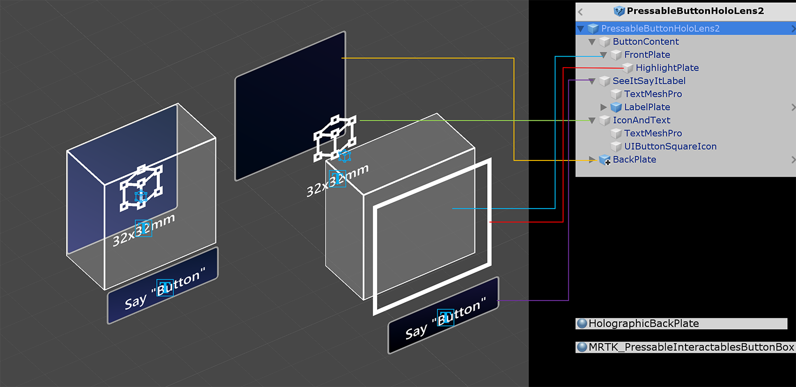

按钮 Button

按钮为用户提供了一种立即触发操作的方法。它是混合现实中最基本的组成部分之一。MRTK提供各种类型的按钮预制体。
MRTK的按钮预制体
按钮预制体的示例在MixedRealityToolkit.SDK/Features/UX/Interactable/Prefabs 文件夹下
基于 UI 图像/图形的按钮
UnityUIInteractableButton.prefabPressableButtonUnityUI.prefabPressableButtonUnityUICircular.prefabPressableButtonHoloLens2UnityUI.prefab
基于碰撞器(Collider)的按钮
| PressableButtonHoloLens2 | PressableButtonHoloLens2Unplated | PressableButtonHoloLens2Circular |
|---|---|---|
| 具有背板的HoloLens 2 shell样式的按钮，支持多种视觉反馈 例如边框光源,接近光源 以及可摁下的前版 | HoloLens 2 shell 样式的按钮 没有背板 | HoloLens 2 shell样式的按钮 具有圆形形状 |
| PressableButtonHoloLens2_32x96 | PressableButtonHoloLens2Bar3H | PressableButtonHoloLens2Bar3V |
| 宽的HoloLens 2 shell样式的按钮 32x96mm | 共享背板的HoloLens 2 水平按钮栏 | 共享背板的HoloLens 2 垂直按钮栏 |
| Radial | Checkbox | ToggleSwitch |
| 单选按钮 | 复选框 | 开关 |
| ButtonHoloLens1 | PressableRoundButton | Button |
| HoloLens 1代 shell 样式按钮 | 圆形按压按钮 | 基础按钮 |
Button.prefab 是基于Interactable概念提供简单的UI控件用于按钮或其他类型的可交互表面。基准按钮支持所有可用的输入方法，包括用于近距离交互的全关节手输入，以及用于远距离交互的凝视+air-tap。您还可以使用语音命令来触发按钮。
PressableButtonHoloLens2.prefab是HoloLens 2的shell 样式按钮,支持按钮的精确移动，直接进行手动跟踪输入。它结合了Interactable脚本和PressableButton 脚本。
如何使用可按下按钮(pressable buttons)
基于 Unity UI 的按钮
在你的场景中创建一个画布(GameObject -> UI -> Canvas)。在Inspector面板为您的画布:
- 点击 "Convert to MRTK Canvas"
- 点击 "Add NearInteractionTouchableUnityUI"
- 将Rect Transform的X、Y和Z scale设置为0.001
然后,拖动 PressableButtonUnityUI.prefab, PressableButtonUnityUICircular.prefab, 或者 PressableButtonHoloLens2UnityUI.prefab 到画布(Canvas)上.
基于碰撞器的按钮
简单的拖动 PressableButtonHoloLens2.prefab or PressableButtonHoloLens2Unplated.prefab 到场景。这些按钮预置体已经配置为具有各种类型输入的视觉和听觉反馈，包括全关节手输入和凝视。
预制体本身和Interactable组件中公开的事件可用于触发其他操作。HandInteractionExample 场景中的可按下按钮使用Interactable的OnClick事件来触发立方体颜色的更改。对于不同类型的输入方法(如凝视、air-tap、手部射线)以及物理按钮的按下，可按按钮脚本将触发此事件。
您可以通过PhysicalPressEventRouter进行配置 可按按钮何时触发OnClick事件。例如，您可以通过设置Interactable On Click 为Event On Press设来置OnClick在按钮第一次按动时触发，而不是在按钮被按下和释放时触发。
要利用特定的手部输入状态信息，可以使用可按下按钮事件- Touch Begin， Touch End， Button Pressed， Button Released。然而，这些事件不会在air-tap、手部射线或眼动输入时触发。
交互状态
在空闲状态下，按钮的前板不可见。当手指靠近或者从凝视输入的光标瞄准表面时，前板发光的边缘就变得可见了。有额外的突出的指尖位置在前板表面。当用手指推时，前板随着指尖移动。当指尖接触到前板表面时，呈现出微妙的脉冲效应，给予触点视觉反馈。
微妙的脉冲效果是由可按下按钮触发的，该按钮寻找ProximityLight(s)，它位于当前交互指针(interacting pointer.)上。如果发现任何proximity lights，将调用ProximityLight.Pulse方法，该方法将自动更改着色器(shader)参数以显示脉冲。
Inspector 属性
Box Collider
按钮前板的Box Collider。
Pressable Button 手部按下按钮运动的交互逻辑。
Physical Press Event Router 此脚本将事件从手动按下交互发送到Interactable。
Interactable Interactable处理各种类型的交互状态和事件。HoloLens凝视，手势和语音输入和沉浸式头显运动控制器输入被这个脚本直接处理。
Audio Source Unity audio source 用于声音反馈
NearInteractionTouchable.cs 需要的，用于使任何对象可被全关节手输入触摸。
预制体布局
ButtonContent 对象包含前板、文本标签和图标。FrontPlate响应接近的食指指尖使用Button_Box着色器。它显示了发光的边界，接近光，和触摸的脉冲效应。文本标签是用TextMesh Pro制作的。SeeItSayItLabel的可见度是由Interactable的主题控制的。

如何更改图标和文本
要更改按钮的文本，请在IconAndText下更新TextMeshPro对象的Text 组件。改变图标可以通过替换分配给UIButtonSquareIcon对象的材质来完成。默认情况下，HolographicButtonIconFontMaterial被赋值。
要创建一个新的图标材质，复制一个现有的图标材质。这些可以在MixedRealityToolkit.SDK/Features/UX/Interactable/Materials文件夹下找到。
创建一个新的PNG贴图并导入到Unity中。使用现有的图标PNG文件的例子作为参考。MixedRealityToolkit.SDK/Features/UX/Interactable/Textures
将新创建的PNG贴图拖放到材质的Albedo属性上。
将材质分配给UIButtonSquareIcon对象。
语音控制 ('See-it, Say-it')
可按按钮中的Interactable脚本已经实现了IMixedRealitySpeechHandler。语音命令关键字可以在这里设置。
Speech Input Profile 另外，您需要在全局Speech Commands Profile中注册语音命令关键字。
See-it, Say-it label 可按按钮预制在SeeItSayItLabel对象下有一个占位符TextMesh Pro标签。可以使用此标签将按钮的语音命令关键字告知用户。
如何从零开始制作一个按钮
您可以在PressableButtonExample场景中找到这些按钮的例子。
1. 使用Cube创建可按按钮(仅限近距离交互)
- 创建一个 Unity Cube (GameObject > 3D Object > Cube)
- 添加
PressableButton.cs脚本 - 添加
NearInteractionTouchable.cs脚本
在“PressableButton”的Inspector面板中，将Cube对象分配给Moving Button Visuals。
当您选择cube时，您将看到该对象上的多个彩色层。这将显示Press Settings下的距离值。使用该值，您可以配置何时开始按下(移动对象)以及何时触发事件。
当你按下按钮时，它会移动，并在PressableButton.cs脚本中产生适当的事件。如TouchBegin(), TouchEnd(), ButtonPressed(), ButtonReleased()。
2. 向基础Cube按钮添加视觉反馈
MRTK标准着色器提供了各种各样的功能，使它很容易添加视觉反馈。创建一个材质并选择着色器Mixed Reality Toolkit/Standard。或者你也可以使用或者复制一个已经存在的使用MRTK标准着色器的材质在/SDK/StandardAssets/Materials/文件夹下。
在Fluent Options.下检查 Hover Light 和Proximity Light。这使视觉反馈的近手部(Proximity Light)和远指针(Hover Light)的互动。
3. 向基本Cube按钮添加音频反馈
因为 PressableButton.cs的脚本公开了TouchBegin(), TouchEnd(), ButtonPressed(), ButtonReleased()等事件，我们可以很容易地分配音频反馈。只需将Unity的 Audio Source添加到Cube对象中，然后通过选择AudioSource.PlayOneShot()来分配音频剪辑。您可以在/SDK/StandardAssets/Audio/文件夹下使用MRTK_Select_Main和MRTK_Select_Secondary音频块。
4. 添加可视状态并处理远程交互事件
Interactable是一个脚本，它可以很容易地为各种类型的输入交互创建可视状态。它还处理远程交互事件。添加Interactable.cs。然后将Cube对象拖放到Profiles下的Target字段中。然后，使用类型ScaleOffsetColorTheme创建一个新主题。在这个主题下，您可以为特定的交互状态指定对象的颜色，例如Focus和Pressed。你也可以控制比例和偏移量。检查Easing并设置duration以使视觉转换平滑。

您将看到对象响应远(手部射线或凝视光标)和近处(手部)交互。
自定义按钮示例
在HandInteractionExample场景中，您可以查看钢琴和圆形按钮的例子，它们都使用了 PressableButton。
每个钢琴键都有一个PressableButton和一个分配的NearInteractionTouchable脚本。验证NearInteractionTouchable的Local Forward 方向是否正确是很重要的。它由编辑器中的一个白色箭头表示。确保箭头远离按钮的正面: